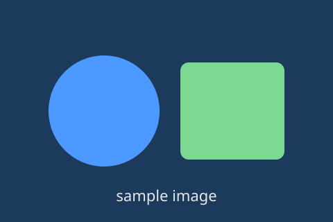

graph TD
A[Start] --> B{Works?}
B -->|yes| C[Ship it]
B -->|no| D[Fix it]
D --> AsequenceDiagram
title Login flow
User->>App: credentials
App->>Auth: verify
Auth-->>App: token
App-->>User: sessionthis is not a valid diagram at all

Extended syntax: marked, inserted, H2O, x2.
A document reference: 《design.md》
const a = 1
const b = 2
console.log(a + b)line 1 of a long configuration block
line 2 of a long configuration block
line 3 of a long configuration block
line 4 of a long configuration block
line 5 of a long configuration block
line 6 of a long configuration block
line 7 of a long configuration block
line 8 of a long configuration block
line 9 of a long configuration block
line 10 of a long configuration block
line 11 of a long configuration block
line 12 of a long configuration block
line 13 of a long configuration block
line 14 of a long configuration block
line 15 of a long configuration block
line 16 of a long configuration block
line 17 of a long configuration block
line 18 of a long configuration block
line 19 of a long configuration block
line 20 of a long configuration block
line 21 of a long configuration block
line 22 of a long configuration block
line 23 of a long configuration block
line 24 of a long configuration block
line 25 of a long configuration block
line 26 of a long configuration block
line 27 of a long configuration block
line 28 of a long configuration block
line 29 of a long configuration block
line 30 of a long configuration block
line 31 of a long configuration block
line 32 of a long configuration block
line 33 of a long configuration block
line 34 of a long configuration block
line 35 of a long configuration block
line 36 of a long configuration block
line 37 of a long configuration block
line 38 of a long configuration block
line 39 of a long configuration block
line 40 of a long configuration block
line 41 of a long configuration block
line 42 of a long configuration block
line 43 of a long configuration block
line 44 of a long configuration block
line 45 of a long configuration block
line 46 of a long configuration block
line 47 of a long configuration block
line 48 of a long configuration block
line 49 of a long configuration block
line 50 of a long configuration block
line 51 of a long configuration block
line 52 of a long configuration block
line 53 of a long configuration block
line 54 of a long configuration block
line 55 of a long configuration block
line 56 of a long configuration block
line 57 of a long configuration block
line 58 of a long configuration block
line 59 of a long configuration block
line 60 of a long configuration block
line 61 of a long configuration block
line 62 of a long configuration block
line 63 of a long configuration block
line 64 of a long configuration block
line 65 of a long configuration block
line 66 of a long configuration block
line 67 of a long configuration block
line 68 of a long configuration block
line 69 of a long configuration block
line 70 of a long configuration block
line 71 of a long configuration block
line 72 of a long configuration block
line 73 of a long configuration block
line 74 of a long configuration block
line 75 of a long configuration block
line 76 of a long configuration block
line 77 of a long configuration block
line 78 of a long configuration block
line 79 of a long configuration block
line 80 of a long configuration blockExtension host renders, preview script enhances.
markdown-it plugins and the mermaid fence placeholder.
Settings ride along in a data attribute.
Mermaid, the zoom viewer and this table of contents.
Long section so the active heading can be observed while scrolling.
A duplicated heading, to check that keys stay unique.
Filler.